UI Change Overview
3.6
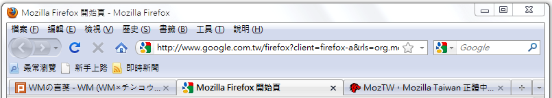
↓

4.0
Mozilla Taiwan Firefox 4 Party
3.6
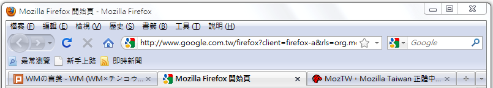
↓
4.0


"Panorama" :P

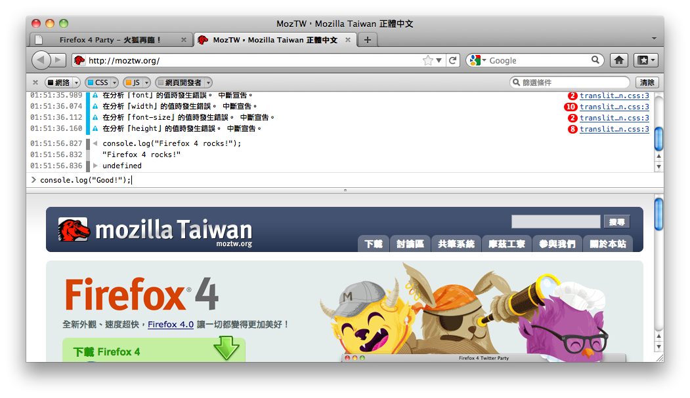
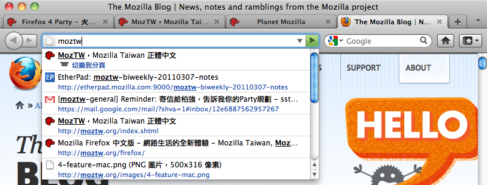
Use % to search in current tabs.
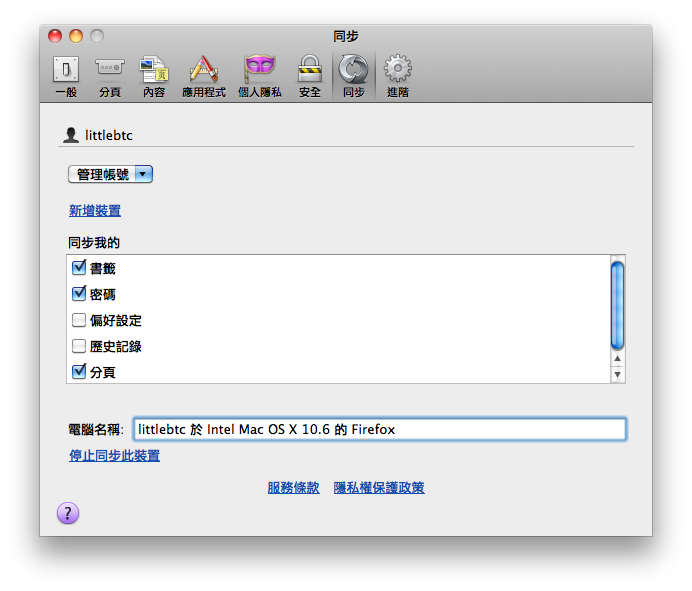
Also Sync to Mobile
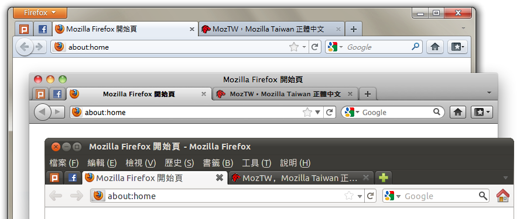
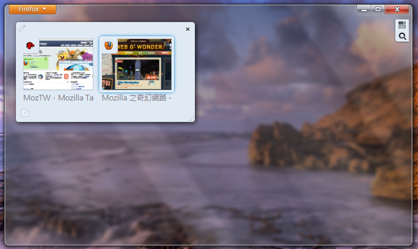
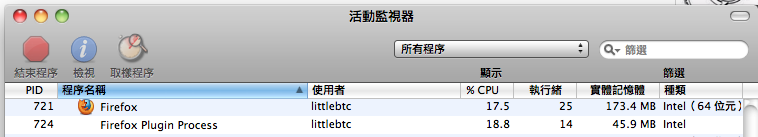
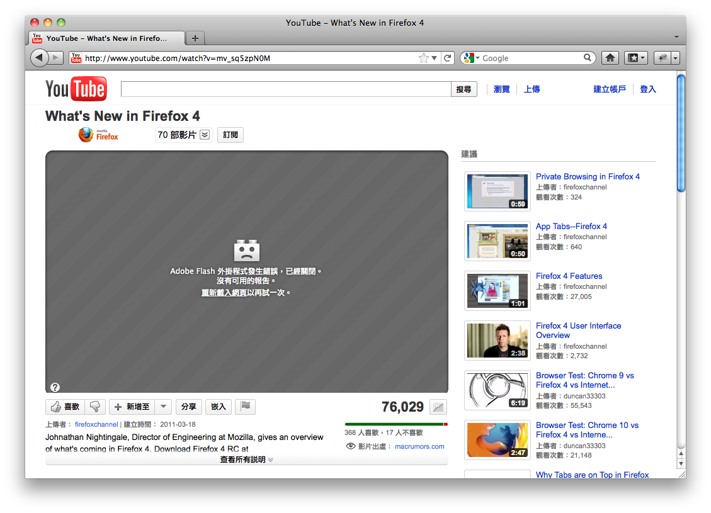
Flash Fails…
3.64.0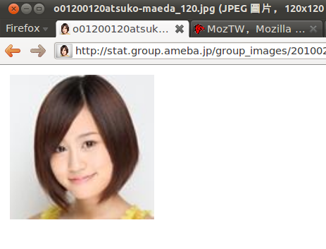

TraceMonkey 3.5
+
JägerMonkey 4.0
Check about:support for detail.

IE9表示：附加元件效能警告器比較好用喔！

no more need for -moz- perfix
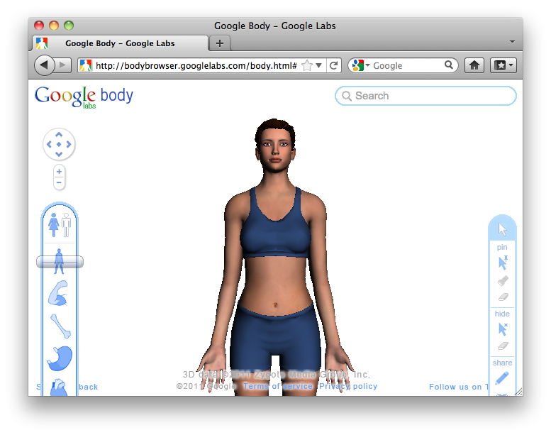
Go to Lost World's Fairs to see more…
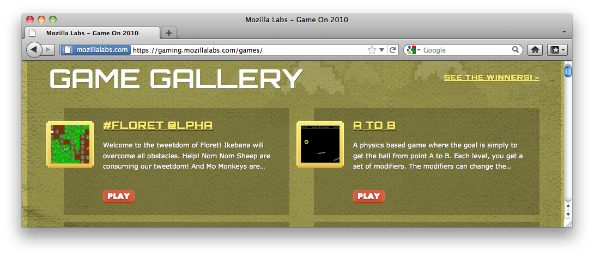
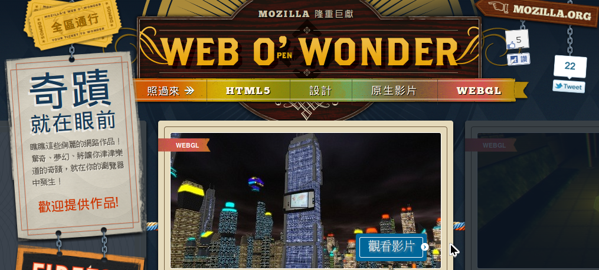

以後就不能天天踩地雷了…

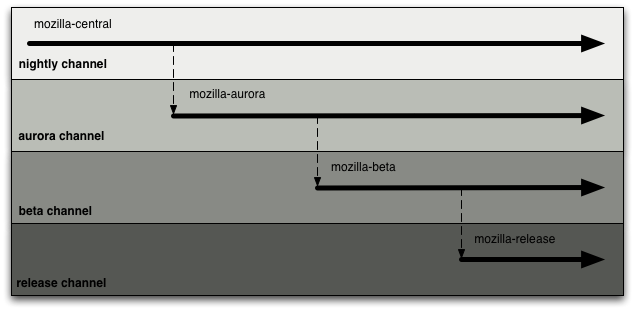


Thanks!